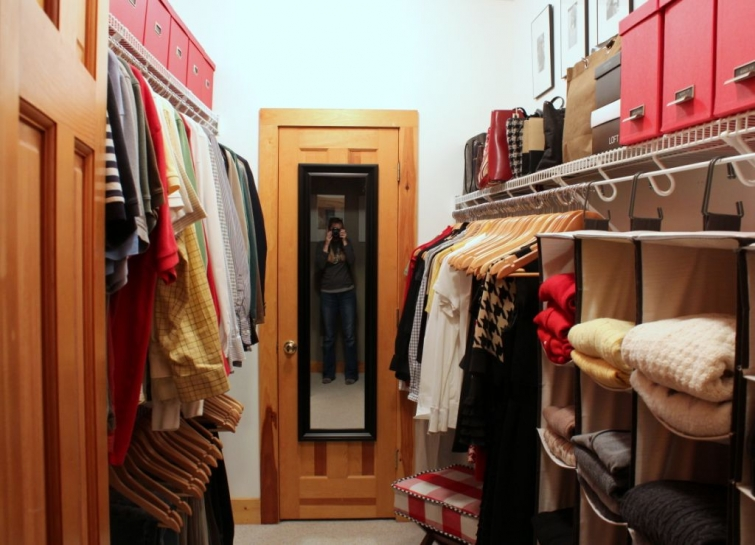

.png)
.PNG)
.PNG)
.PNG)
.PNG)
.PNG)
.JPG)
.JPG)
.PNG)
.PNG)


My new year’s goal has been to accomplish one organization project a month.  This closet’s organization actually started in late December with an idea to just change out the hangers and generally straighten up in there.  So bad blogger girl here failed to take any before photos because I did not think I would be doing a lot to the space.  But the longer I worked on it, the more I thought of to do.  I should have taken before photos. Please forgive me.  Okay? Alright now… let’s get in the closet.
Another title for this post might be:
It really does. Â Many many years ago, when we were working on the changes to the blueprints of our home, the original plan was to have two closets with bifold doors along one wall in the master bedroom. Â We had a builder study our plans, and he said, “You are not going to like that. Â Add about 6 more feet to that space, and put in a walk in closet. Â You won’t be sorry.” So we listened and did just that.

And now the closet truly works like a tiny dressing room…and this closet has a closet inside it.  (Now you are thinking I am crazy, right?!) I am standing in the doorway to the closet coming from the bedroom in the photo above.  The mirror is on a door to the closet inside the closet. The water heater, cleaning supplies, vacuum cleaner, and painting materials are all in there. (Another project for later in the year. 🙂 ) So how do you organize a closet full of clothes, make it work like a dressing room, and make it attractive? You probably already know all of this, but I am writing it just in case there might be one person who does not.
1. Â Purge anything you haven’t worn/used in a year. Â Then sort all the clothing that remains by kind (i.e. all skirts together, all pants together, etc.) Â and group them by color. Â That includes handbags and shoes.

2. Â Hang everything on matching hangers.
I watched for sales on these from Home Depot and Target and replaced all our plastic ones with the wooden ones over a couple of months. Â If you are tight on space, you might be better off with a thinner style than these because they do take up more hanging space.
3. Â Use matching hanging bags for sweaters and shoes.
(These came from Target.)
4. Â Use matching boxes to hold miscellaneous items and out of season accessories.
I already had the red boxes on my side of the closet with my scarves, make up travel bags, extra make up, etc., but I had them scattered among the handbags. Â Just grouping them together helped to make it look more organized. When we moved all the luggage out of this closet and into the coat closet, it freed up space for all our out of season thermal wear. Â So I purchased more red boxes over the last couple of months to store those in.
The boxes above are the same as those on my side of the closet. Â They came from the Container Store. I simply turned them in the other direction on my husband’s side of the closet and added Martha Stewart adhesive metal bookplates from Staples on one side. I wanted the labels to be black, but there is no white ink in a printer to make a light color on black. Â So these were printed with a black background on white paper.
5. Use ready made units with drawers for make up, hair products, and other things you need.
(Ours are also holding the linens for the bedroom.)  I know built in ones would be beautiful, but since we don’t have those, we purchased 6 of these from Lowes and stacked them in 3 groups. I changed out the plastic handles for the metal ones to dress them up a little.
6. Â Use jars and trays to keep your supplies neat.
(I also keep little notebooks handy for jotting down shopping and to-do lists.)
7. Â Purge your make up and hair products down to the minimum you use, and organize them with drawer organizers.
The top drawer holds make up and things needed for clothing (safety pins, a lint roller, dryer sheets for static cling, and a razor for getting rid of sweater fuzz.) Â While we are on the subject of make up, I have recently switched from being an Estee Lauder girl to a Clinique girl, but I cannot find a Clinique mascara that does as good a job as the Estee Lauder ones. Â Do any of you have a Clinique mascara that you love?
8. Â Include a container to hold your dry cleaning items.
I found this tote at TJ Maxx. Â It had gold handles that I did not really care for. Â So I cut them off and replaced them with black ribbon handles. Â The label is another Martha Stewart from Staples product just pinned on with a safety pin. Â I wrote on it with a chalkboard marker.
9. Include a piece of furniture for seating.
This is a stool that I purchased on sale from Target. It was originally a maroon color, but I upholstered it with some fabric left over from the kitchen curtain project. Â I will have a tutorial for you soon, if you would like to recover one yourself. Â I still want to add wheels to the legs to make it easier to move around.
10. Â Include a trash can.
You know you need one for when you cut price tags off the new clothes you buy or threads that somehow hang off your skirt. Â I also have a phone in there because my mother calls me in the morning when I am getting ready for work.
11. Â Add artwork that you like.
Think about how much time out of your life you spend getting ready.  Shouldn’t the space for it be a place that you enjoy seeing? That is why there are photographs hanging in our closet (aka dressing room. 🙂 )
12. Â Hang a full length mirror in your closet.
This is the one last thing left to do in there. Â I want to replace that mirror with a frameless one that covers the full panels of the door, and then the closet will be finished…and I can move on to the next organization project.
I was a little leery to even write this post here today for several reasons.  First, when I wrote the one on our coat closet organization, my mother said, “You did an entire post on a … closet??” (As if I had lost my mind.)  And I replied, “Yes, people need ideas for organization that are easy to implement.”
Secondly, I did not want to give the impression that I am an expert on anything. Â When I read posts that have “10 tips for this or that thing,” I often feel like my intelligence is insulted, and I certainly don’t want to do that to any of you. Â So I truly hope you find an idea here that you can use. Â Otherwise, my mom will think I am crazy once again! (But it won’t be the first or the last time.)
Finally, this closet is about as personal as it gets…right down to my choice in make up, and  I am not very good at personal.
And while I am on the subject of being brave and putting this personal space out there in the blog world…You all say that I never include photos of myself in any post, so here is one for you. This is my personal wardrobe favorite from the organized closet. A real fashion statement, right?! 🙂
Do you have a closet organization tip you would like to share with us?
We would love to hear about it!


.PNG)
Hi Kelly! The closet is amazing, I LOVE the red boxes. I have a question about your matching hangers. I love having my clothes on uniform hangers, but how do you handle dry-cleaning? My husband and I both dry-clean more than 50% of our clothes, especially our business clothes. Do you take them off of the dry cleaning hangers and move them to your wooden ones? This seems like it would be a huge pain – plus with pants I think they would get messed up. Your thoughts are appreciated!
Thanks,
Megan
—————————————————————
Megan, we have hardly any dry cleaning here. You probably do more in a month than we do in a year. And my detail obsessed brain does move them from the wire cleaner’s hanger to the wooden ones, but you are right. If you do as much as you do, it would be a pain. The pants would not get messed up though, because I think the bar across on the wooden hangers actually does fine. It is a very smooth bar, so it does not snag, and the pants still keep their nice crisp fold. Time versus looks though, I would probably have to rule in favor of saving the time and keeping them on the dry cleaner’s hanger…especially if you and your husband work outside the home. The purpose of organization is to save time, so keep all your dry cleaning in one section, and at least that would be uniform together.
Hope this helps!
Kelly
Oh, I see! Lol. I’m sorry. I misunderstood you. When you said you had to turn the boxes in the other direction, I thought you meant 180 degrees, not laterally. Kind of made me do a Scooby Doo on that one, lol! I had to come back to the blog and re-read that section to understand. Ah, good call! Thanks so much, Kelly, for answering me. All the best to you.
Ha ha ha! You Are so very brave to post “personal,” but not crazy, lol. I never get the impression you are trying to come off as an expert at anything. But in life we (hopefully) learn skills that help others. And you certainly do that. Help others with your ideas and creativity. Good job here! Very helpful tips. I’m curious…why did you find it necessary to to turn the red boxes the other way on your hub’s side? I didn’t really get that. This is truly beautifully done, Kelly
———————————————————–
Thank you Retha. Such a sweet comment! The reason I turned the boxes in a different direction on the other side was because I wanted them to cover the entire expanse of shelf there. I didn’t need more than 8 boxes for the things that were stored there, and it would have cost a lot more (obviously double the cost) to totally fill the shelf with them turned in the narrow direction.
Good question!
Kelly
Girl you are adorable! Tell Mom you are doing a great job. Sorry you haven’t heard from me in a while. Simply crazy here!
I loved reading your organizing tips. Teachers always have the best ideas for organizing. Can’t wait to read more.
————————————————————
Aw thanks, Lisa! I know all about crazy here as well. 🙂 Teachers seem to have to know about organizing since we have soooo much stuff in often small spaces (and many times no closet!)
Kelly
First of all, cute shoes. 🙂
Secondly, I LOVE these closet posts. I must say I am a tad bit jealous of your closet space. I do love how you have organized this space. I don’t think you are crazy one bit.
————————————————————–
Thank you, Lori. Those shoes are old ones from Target (bought them in black and gray, and daughter has them in black!) So glad you enjoyed the post on the closet. Don’t be jealous. Our first house had 2 tiny closets for the entire house! We had to be VERY creative with storage in that space.
Kelly
Kelly, you never cease to blow me away!!!
So many good tips, I’m going to have to read it again..I NEED advice in this area.
I can tell you one thing…for mascara…Laura Mercier. I learned it from a teenager on Youtube and WOW was she right…in fact, all of the LM products I’ve tried have been favorites.
————————————————————-
Glad the post was helpful Phyllis. 🙂 I have never heard of Laura Mercier. A teenager on Youtube! How funny!! I will have to look for those products.
Thanks for the tip!
Kelly
I love, love your closet organization. I especially like the phone in your closet. What a precious thing to have a special Mom phone. Love the stool.
————————————————————
Thank you DiAnne. I am glad you liked it. Love the term “mom phone”! How cute!
Kelly
great job in organizing and putting together a workable and pretty closet. I love your honesty and reality. Thank you,
————————————————————-
You are so kind to say that Kathy. I appreciate your reading and leaving a comment on the blog post.
Kelly
Your closet looks great Kelly. Love the pops of red and the photos of your kids. I did the same with my daughter’s baby pics. I agree about sharing personal stuff on your blog. It’s the one thing I really struggle with…how personal should you get? Thanks for sharing. Oh, and I love and use Clinique High Impact Mascara.:)
K.
————————————————————-
Well I am glad to know I am not the only one who hangs photos in the closet. 🙂 I’ve not tried the High Impact mascara from Clinique, so I may try that one next. I’ve tried the Naturally Glossy and the Lash Doubling, and they have not done anything – especially when compared to Estee Lauder’s Sumptuous.
Kelly
Kelly,
I love that you shared your personal space with us! I love to see how you do things. I do organize my closet similarly to the way you do with the skirts, pants, shirts all hung together. I still need to get all matching hangers. I also have built in drawers and I love them. I have a questions for you though. What made you switch from Estee Lauder to Clinic? I am an Estee Lauder girl (Clinic is made by the same company as Estee Lauder). It seems like every time I love an Estee Lauder product they discontinue it or change it. I am just curious about your choice. I will getting a trash can and scissors asap. Those are great ideas!
———————————————————–
I am so glad you liked it Dawn. I am jealous of your built in drawers! If we were to build again, I would definitely have that in a closet. I switched to Estee Lauder for a couple of reasons. I became allergic to their eye shadows a number of years ago…not sure if they changed their formula or if it was just me (like my sudden allergy to shellfish after eating it for half a century!) And the other reason was precisely what you said in your comment. They discontinued my blush (that used to come in a coloring stick tube). So I changed to their cream blush. Then just recently they discontinued it. That was enough for me to look elsewhere. I had always liked the Clinique moisturizer, so I went with it.
Kelly
Oh my! In my dreams my closet would look like this.
And you look like a teenager.!
————————————————————
A teenager?! My husband WISHES. ha ha. 🙂 I think it is just the long hair and the jeans…very misleading! I am a very loooooong way from my teenage days.
But thank you for the compliment!
Kelly
Ok, I not only have house envy, and now closet envy? So much detail and organization. Just what you set out to do. I think we have very similar tastes. Look at all that black, red and even houndstooth. Classic looks are always in fashion. Can’t go wrong. Oh and how adorable, skinny you in front of that mirror. How do you stay so thin with all those jars of candy and wonderful recipes you always post girl?? I love your touches, all the way down to the needed phone and adorable target bench. I assume you reupholstered it? Add that to the lists of talents? Yes, do you have a sewing room as well? Next reveal? I think with a closet such as this, my family would be calling the house phone, saying they’re tired of waiting in the car with the engine running and be saying their leaving without me! I would just be trying on way too many outfits, then sitting on that cute bench in front of the mirror maybe reevaluating shoes, jewelry and make up choices? I’d have to say its just too cozy in there! Nice work Kelly!
Debra
—————————————————————
Too funny! And no I am not skinny. When we married, I weighed 98 lbs. and wore a size 2. THAT was skinny. Three decades and three babies later, the body changes! I DO eat my fair share of the candy and foods around here. No sewing room in our house…just the dining room table. But I am rethinking the use of one of the rooms here and might be able to squeeze a sewing area in it. Thank you for the very sweet comment!
Kelly
Love your blog Kelly, I stalk it regularly but have never commented before 🙂 Your closet looks great – makes me realize I need to get going on mine. I use Clinique makeup too and love their Lash Power mascara. It doesn’t flake or run and my favorite part is how easy it is to remove – warm water in the shower and it’s gone.
————————————————————–
Yay, you came out of stalking mode! Love it! Thank you for taking the time to comment Betsy. I am happy you liked the closet. Lash Power is one mascara I have not tried, so on my next Clinique purchase I will look for that one.
Have a great weekend!
Kelly
let me first say how sweet that your mom calls you every morning…i can flip that and say my daughter calls me every morning on her way to work and after work on her way to pick up the kids…wonderful way to start my day!
i purged and cleaned out our master closet a few years ago when we had to replace carpet in our bedroom due to a burst hot water heater up in the attic (long story) and for a while it looked pretty good. my husband has his own closet so i get the whole thing to myself! now it’s become a jumble of stuff but i have used some of your tips….i have matching hangers (the skinny non-skid ones that are so popular all in black so they match), i also have all my clothes arranged by color. but that’s where it ends.
it really needs a makeover but i’ve got to get the “urge” before that happens! i love all your ideas and would never think you’re not an expert on offering organizing ideas….yours are spot on and make a lot of sense!
———————————————————–
So do you have a “daughter phone” then Judy? 🙂 It is so easy for messy to creep back into a space after awhile, isn’t it? You are right about needing the urge to organize. It seems that you have to MAKE a mess in order to get it organized, and that is not always easy. Glad you liked the closet. Thank you for your very sweet words here!
Kelly
Very impressive closet! Do you have a craft room by any chance where you do some sewing like the stool cover? Again, loving the red accents. Must cheer you up in the morning. We very excited about this weekend’s weather as it will be 13 C. Woohoo!Perhaps it will put me in the mood to do some purging. I purchase my products from Paula’s Choice and when I need some advice on what products she and her team recommends I go to Beautypedia. I use lashblaster by Cover Girl, works quite well on my tiny eyelashes. I would like to try Garnier’s 5 sec blur.
Thanks for all the tips! You have a great blog Kelly.
————————————————————–
Impressive? Nah. Just clean. 🙂 I do not have a craft room anywhere, but I am sure working on a workroom for me in my head as we think about rearranging the room uses here. Thank you for the makeup tips. 5 sec blur seems like a crazy name for a product! (Sounds like my vision. LOL)
Kelly
Kelly,
Great post…true confession: organizing posts of any kind are a favorite of mine. I never get tired of seeing how others organize their “stuff” and we all have “stuff”. I’m so envious of your walk in closet. I’ve only had one in my life and I loved it. But there were some great ideas for those of us with regular closets, so thank you.
Karen
———————————————————–
Yes, we all do have stuff…some of us more than others! I will try to keep you full of organizing posts this year, Karen! I am so glad to know you like them. (See Mom, they DO like to see closets! 🙂 )
Kelly
I mean–you will NOT believe it–this morning I opened my closet and said “today is the day I start my closet!” Not that it needs it!! HA! But now I am going to rethink it. I feel a real purge coming on. Since I am retired, I really don’t need so many outfits. I mostly wear jeans, capris and more casual wear now. Thanks to Katrina for the tip about the bead board wall paper at Lowes– going to check it out soon! I have two products to recommend to the readers– found a great new product to go over moisturizer and under makeup, it is Garnier 5sec Blur Skin Renew–found it at Walgreeens and I just got The Perfecter fusion styler by Calista Tools–got it at Bed Bath and Beyond! All I can say is WOW! Really works for me!! The best mascara I have found so far is by Covergirl–lashblast fusion. So I’m off to begin my Spring Cleaning!! Thanks Kelly– love your organization tips! keep them up!!
————————————————————-
That IS wild, Louvina! Great minds definitely think alike around here. I want to check out the bead board wallpaper too…thinking of using it in the laundry room aka laundry CLOSET. Thanks for all the makeup tips. Unfortunately, I seem to be allergic to Covergirl eye products. I guess my eyes are just super sensitive to makeup.
Kelly
Kelly, you make everything look so stylish and organized. I have no doubt we will start seeing your rooms and closets in magazines soon. And on your photos….if I had your body, I’d have many photos ALL the time, everywhere!!!
————————————————————
Too funny! I doubt you will be seeing our spaces everywhere. And glory be, my body does NOT need to have photos of it everywhere. But thank you for the compliment!
Kelly
Thank you for sharing your ideas. There are many of us, like me, who can use all the inspiration we can get! I have now decided to put a full length mirror in my closet. Plus I like the idea of something to sit on and a trash can. I love seeing new ways to organize so, keep sharing! I’m going to do my closet this spring when it is warmer. When you read that post you will understand why I am waiting. hint: my closet is cold!
————————————————————-
I will keep sharing Jayne. Thank you for the encouragement! A cold closet would be no fun…especially if you dress in there. I specifically asked that a vent be put in our closet when we were designing it. I knew I would want heat in it!
Kelly
Thanks for the info. I am heading to the closet right now!
xo, lissy
————————————————————-
You are quite welcome, Lissy! I hope you make good progress with your closet. 🙂
Kelly
I almost forgot……Lancome mascara is fantastic! It is pricey, but well worth the cost. I use Defincils for everyday and Star! for night/special occasions.
————————————————————-
Another vote for the Defincils. That is one I am really going to have to try since so many of you are recommending it. Maybe one of the shops around here will have a sample to test out for a while.
Kelly
Kelly, can I hire you to come to Indiana?? I’m very impressed. Just need to start.
————————————————————–
Ha ha, Kaye Ann! I am afraid that is a little far to travel. You do “just need to start.” Get in there. You can do it!
Kelly
Guess what I am doing today?! Thank you for the inspiration, Kelly~
———————————————————–
Let’s see…organizing your closet?? Glad to provide a little inspiration for you Susan!
Kelly
Kelly what perfect timing & really great ideas. I’m starting the big closet purge, & looks like our closets are approximately the same size. Love the white drawers for makeup, I’m are currently taking up space in my dresser, and along with the cologne bottles on top I was looking to move it into the closet somehow as a small dressing area, so I can make our bedroom more serene. Going to find your coat closet make over & see if I can grab ideas there too, since that is another place that needs a purge & make over. Thanks again….& let the purging begin!!!!
—————————————————————
The purging is really the biggest step to me. And then the shopping to decide on what I needed took awhile. The actual “time in the closet itself” was not that bad. Hope you make fast work of your projects!
Kelly
Kelly,
It’s always exciting to see an email pop-up from ‘Talk of the House’.
I loved this post, like so many of your others ones!
Last week we organized our bedroom closet and it has been very relaxing getting ready in the morning. I know where everything is and nothing is crumpled or stuffed to fit.
I like the red boxes and wooden hangers! It all looks so nice.
—————————————————————
Thank you for your always encouraging words here, Laura. Isn’t it such a nice feeling to have it all organized…like a sigh of relief. 🙂
Kelly
I echo the sentiments of others: awesome, inspiring & ever-so practical! I love the “signature Kelly red” throughout the closet, too! Thanks for sharing some of your personal space w/us as well as your great organizational skills.
————————————————————-
You are so welcome DeeDee. I try to be practical (even though my husband doesn’t always think I am! LOL)
Kelly
I love any posts on organization. This closet is quite impressive and, of course, red! You did a beautiful job and so pretty to be in and look at. I was laughing at the last picture of yourself. Because I have been one of those asking for you to be in more of your posts. What is with the camera in front of your beautiful face! LOL
————————————————————
I wonder if blog readers by nature are organizers? hmmm…something to think about. The camera in my face is the ONLY way I can get a photo to be centered. If I left it to holding it out in front of me, you might be able to see half a door or maybe the floor. I am SO not a photographer (and I am blind on top of that!) And when the autofocus shuts off on my Canon (as it has done quite a bit of lately) it is really hard for me to take a decent picture.
Kelly
I am seriously impressed! painting all our closets is on the agenda for this year, so I am sure there will be some serious purging. Our (separate) closets are pretty organized by necessity because they are not large. It am always looking for good organization ideas, and you have certainly inspired me.
about the makeup: I used to work for Estée Lauder years ago, and at the time, I thought there was nothing better. since then I have tried everything there is, and I have been buying some Clinique skin care, too. I have never found a Clinique mascara that are as good as the Lauder ones! but the best product to start with is a Lancôme mascara primer, the very best. I makes every mascara look better, and it is good for your eyelashes. I also
like nearly all the Lancôme formulas in mascara
! too. I believe Defiinicils is their best seller! maybe overall! worldwide.
please forgive the tops. It is because the stupid iPad corrects me incorrectly as I go. it makes me crazy!!!
————————————————————-
Painting the closets would NOT be fun. You have to take EVERYTHING out to do it, and then put it ALL back in . No…definitely not fun. Why in the world does Estee Lauder keep changing its products when it has best sellers? That aggravation is what made me change to Clinique. I will be checking out the Lancome mascara.
I just got an ipad at work last week…lots to learn with it.
Kelly
Great post!!! So sweet that you have a phone to talk to your mom every morning in your “dressing” room/closet. I have never had a large closet so I really envy yours. I just love your clothes, shoes and handbags!!! I bet you are the cutest teacher at your school! My husband has the larger closet in our new to us tiny house but that’s okay because for 28 years his closet was in our daughter’s room …our old house was built in 1940 and seems back then they didn’t see a need for closets. He did a great job revamping his closet with supplies from Lowes but it is not near as cute as yours!
Mmmm….you went from Estee Lauder to Clinique. I did the opposite a few years ago. I love all the Double Wear products. I am curious as to why you switched. I have never found a Clinique mascara I like and I have tried then all. Do you put your make up on in your dressing room? I make so many mistakes I have to be right by my bathroom sink!
As an aside, my husband is finishing sprucing up his bathroom this week. He hung the Roth and Allen bead board wallpaper horizontally and painted it white. It looks just like real bead board..really..and right now the rolls are on clearance at Lowes for only $9.00!
Thanks for another glimpse into your pretty house!
—————————————————————
Katrina I am a loooooong way from being the cutest teacher at our school. We have some young teachers who are much more creative in their clothes styling than this middle aged female will ever be! Kudos to your husband for putting up with a small closet for so long. Old homes certainly didn’t have today’s closet space.
As far as makeup goes, I did like the doublewear foundation, but I was allergic to EL eyeshadow, and their constant changing of products once I found one I loved just made me mad (angry AND crazy.) So I switched. I do put my makeup on in the closet. There are 2 overhead lights in there.
Thanks for tip on the wallpaper. I will probably head to Lowes later today to see if ours has it on sale too.
Thank you for reading and leaving your comment!
Kelly
OH MY WORD, what a neat closet. Your clothes coordinate with your house. I don’t think I could ever show my closet. I thought I had it straight and organized about a year ago, but it has gone south since I retired. You would think it would be better now that I don’t have to leave the house everyday! 😀
We are getting ready to paint our bedroom so maybe this will push me to cleaning out once again.
Amazing is all I can say!
————————————————————–
I think it is more that my house coordinates with my clothes. 🙂 They say you should look in your wardrobe when you are trying to choose patterns and colors for your interior spaces. I know what I love, and it shows up EVERYWHERE. Good luck painting your bedroom. That is a major job!
Kelly
Love this post–so timely for me, as I am currently purging stuff from my closet & contemplating better organization. I love the photos of your kids. I am sooo stealing (I mean borrowing) that idea! I have added a small jewelry organizer in one of the dresser drawers in my closet for my earrings and “small” stuff. It’s a great help to me in the morning to be able to grab a favorite pair of earrings quickly before dashing out to car pool high school kids before work. Eliminates that “unmatched earring” look. 😉 Thanks for the great tips, Kelly.
————————————————————
Sounds like you on your way to great organization. Glad the post could provide some ideas for you. Thanks for the jewelry organization tip. You mean you don’t like the unmatched earring look? ha ha! Thanks for taking the time to leave a comment, Shar.
Kelly
Thanks for sharing, Kelly! This is just beautiful. You absolutely amaze me. How do you find the time and energy to do all that you do at home on top of being a teacher? I am always blown away by your many talents 😉
————————————————————-
You are too kind, Lisa. My teaching job this year is sooo much less demanding than what I had for 30 years. I don’t know how teachers can do half they are expected it to do. It has become humanly impossible to do all that is expected in this county. Sorry…could preach an entire sermon on this! But thank you for the compliments. I have a husband who is a tremendous help. (And while I am working on one project, other parts of the house are neglected…so don’t think it is ALL in a state of organization around here…it is definitely not.)
Kelly
I so wish we had changed our side by side closets to a walk in. I don’t know how many times I have tried to justify adding the room on to do this. Your closet looks great.I love the red boxes, isn’t The Container Store wonderful!!! I like my clothes organized by color too. It makes me happy to see a rainbow. I also love the phone in your closet because your mom calls……my daughter has one in her closet too because I call her ♥
————————————————————-
The changing the side by side to a walk in closet is probably the best home advice we have ever been given. I wish there was a Container Store close by. (But I would spend waaaaay too much money there for sure!) How fun to know that someone else has a closet telephone!
Kelly
Wow! I love this post! We are in the middle of building a walk in closet. Currently, the only closet in the house is downstairs and is only 5 feet wide. This post is really going to help in the organization of mine. Thanks!
————————————————————-
Glad to know I could help! How wonderful that you are getting a walk in closet. You know you are going to love all that space!
Kelly
Well, I love it. 🙂 We don’t have anything remotely close to a walk-in closet, and I’m constantly working on my closet and the 3′-wide closet my TWO daughters have shared their whole lives (going to a college dorm room was a big step up for them, space-wise, haha). I’m about to do one MORE purge (letting even more shoes and purses go, and moving my keepsakes like old cards and letters to another place outside the closet) and I liked seeing your closet.
———————————————————–
Whoa..you do have tight closet space. A purge is necessary frequently when dealing with that (or adding a piece of furniture that can handle some of it.) Too funny about an upgrade to a dorm room! (Although some of the newer dorms around here have done a great job with built in storage.)
Kelly
Kelly: You certainly have the gift of inspiring others. You did an excellent job of organizing your closet!!! I wish I could get to mine back in Ohio to start incorporating some of your amazing ideas but I am currently at my daughter’s home in NC and will be for quite a while. I will have to keep on revisiting this blog to keep the inspiration aflame:-) And thank you for allowing us a glimpse into part of your personal life. You are completely adorable!
————————————————————
Thank you Gail. I am glad you liked the organization tips. Hope you get back to your home in Ohio soon. (But NC is my favorite state!)
Kelly
Dear Mom of Kelly,
We love all of Kelly’s ideas. She really knows what she’s doing with this blog — don’t worry! ~Sally [one of Kelly’s fans]
Dear Kelly,
LOVE it. Great organizing tips, and beautiful closet! ~Sally
—————————————————————
Sally, your comment made me laugh out loud! I loved it! (And I am sure my mom did as well.) Thank you for your words of encouragement!
Kelly
Wow! You are so organized! This is where we are not alike. Do you have another closest for out-of-season clothing? Since my closet looks like a hoarder’s I will share my husband’s organizing tip/obsession. He hangs his jeans from most-faded to least-faded. (Ain’t nobody got time for that!) I DO have another, different kind of tip for you. Remember that I asked you about chalkboard markers leaving a “ghost shadow”? I just discovered that if you use a dampened Mr. Clean Magic Eraser, it gets off almost all of the shadow the chalkboard marker leaves. (Katrina, share that with Fred.) Kelly, you have inspired me to think about purging in my closet. So, tell your mom this was a great post.
———————————————————–
You mean you did not get that organization gene?? No other closet for my out of season clothes (other than the coat closet with the coats and ski wear.) Sweaters all hang in our master bedroom closet. I keep all my shorts in the dresser in the bedroom. Your husband’s jeans tip is quite unique! Since I only have a few pair that would not be hard to do. I do have a pile of “work jeans” for working outside in, and they are in the bottom of the hanging sweater bag.Thank you thank you thank you for the tip on the ghost chalk writing! I LOVE Mr. Clean Magic Erasers, and will certainly put them to use on this. GREAT tip!!!
Kelly
It looks great, Kelly! Organization posts are always so inspiring. The courage it takes someone to post pictures of their closet is never lost on me. When I’ve organized closets it has always amazed what unity it brings just by having one type of hanger. Last year I invested in new hangers for my own closet. I prefer the velvet type. I love that you have the framed photographs hung in your closet as well as the stool. Well done!
————————————————————-
What nice compliments Jill! Thank you. If I had to recommend only one thing to do to “upgrade” a closet, I am with you. Get matching hangers. They make SUCH a difference. The velvet ones look really nice, and they don’t take up so much space.
Kelly
I love it! Thank you for sharing this! My husband and I have separate closets and he thinks I’m nuts because my hangers all match and i’ve organized it in the same way you have done yours. One additional item I added over the last few years is those plastic shoulder covers from the container store. I live in a dusty climate and things I wore only once a month would get dusty. These have saved the day. Loved the photo of you — thanks for including it!
—————————————————————
Great tip for the shoulder covers! I need to get them for the dresses in there. Pretty much everything else gets worn enough that it is not an issue. The dresses are worn much less frequently so that would work great for them.
Kelly
I love organizing posts Kelly!! I have been working on my own closet and trying to keep it neat! I also have a calendar hanging in my closet as that is one place I go first thing in the morning and I can check and see what is on my agenda for the day!! Your closet is Gorgeous!! Good Work!
———————————————————-
Thanks Arlene! A calendar IS such a great idea. Perhaps I should add that above my dry cleaning bin.
Thanks for the tip!
Kelly